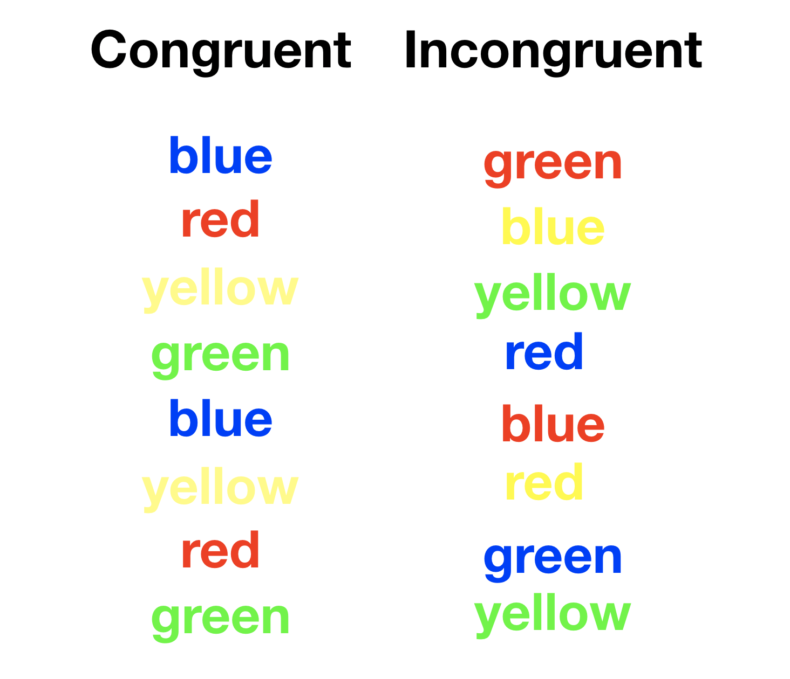

1 What is Cognition?
1.1 Instances of Cognition
What is cognition and how does it work? The book is titled “Instances of Cognition” to orient you to the diversity of ideas, approaches, and multi-faceted interests in this field of research. As a side note, later in the course we will discuss theories of how cognition works that are called “instance theories” (Jamieson et al., 2022, readcube link to read the paper online https://rdcu.be/cGGzW). Despite centuries of research into cognition and the wealth of knowledge generated from that work, there remain many unresolved issues and divergent perspectives that have not yet produced widely accepted answers to fundamental questions about the nature and mechanics of cognition.
The diversity of approaches and perspectives in cognition makes it difficult to provide a coherent survey of the entire field in the form of a textbook. So, this textbook adopts a museum metaphor to help provide some structure to the overview. Consider the task of learning about everything in a museum like the Metropolitan Museum of Art. It’s an impossible task. The MET is way too big to see in one day. It has many rooms with countless artifacts, each with their own histories. A tour guide takes you on a path through the museum while providing context and background and highlighting interesting tidbits. However, a comprehensive understanding of the story behind a single artifact could require years or lifetimes of careful investigation.
Cognition is like the museum. It contains many artifacts in the form of questions, methods, findings, theories, applications, and implications for society. This textbook is like a museum tour guide. It is intended to highlight different domains in cognition, and hopefully find ways to tell compelling stories along the way. Like the MET is open to the public, much of the research we will discuss is open to you, in the form of published journal articles and books.
1.2 Questions of cognition
Let’s address two types of questions: What is cognition? And what kinds of questions do researchers ask and seek answers to about cognition?
1.2.1 Defining Cognition
An everyday definition of cognition involves anything to do with how your mind works. We will explore cognition from this everyday perspective, and from more formal perspectives in the cognitive sciences.
I credit Neisser with coining the term “Cognitive Psychology” in 1967; however, Thomas V. Moore published a lesser known textbook called “Cognitive Psychology” in 1939 (Moore, 1939). Thanks to a twitter thread by Steve Most for pointing this out, and see Surprenant & Neath (1997) for a review of Moore’s ideas.
Ulric Neisser popularized the term “Cognitive Psychology” in his 1967 textbook by the same name (Neisser, 1967). He defined cognition as:
“…all processes by which the sensory input is transformed, reduced, elaborated, stored, recovered, and used”.
Neisser’s definition suggests that cognition encompasses various mental processes that receive, change, interpret, and make sense of the sensory input from the world around us. For example, consider looking at a red gemstone in a jewelry store. Eyes transduce the wavelength of light corresponding to the color red into electrical impulses that spread across massively interconnected groups of neurons in the brain. The sensory input becomes transformed into a visible percept. Further processing may allow identification and recognition of objects within the scene, taking actions like picking up a particular object, or judging aspects of the situation such as whether the gemstone is worth purchasing. Cognitive processing also involves preserving the details of such experiences in memory, which allows previous experiences to be stored, retrieved, and used in the present moment.
Neisser’s definition remains current, but is also somewhat limited to a particular information processing view of cognition (discussed in a later chapter). Neisser also expressed a broad outlook on the potential of cognitive research, and wrote:
“If X is an interesting or socially important aspect of memory, then psychologists have hardly ever studied X”. (“Remembering the Father of Cognitive Psychology,” 2012)
Neisser’s critique also remains current. Among the rooms of the metaphorical cognitive museum, we will encounter examples of research that Neisser might have criticized for being uninteresting or not socially important. Although significant research has been conducted, various exciting and socially relevant aspects of cognition continue to be understudied. In other words, some rooms in the museum have few research artifacts, and there are entire wings that could exist but have not yet been built.
1.2.2 Research questions
If you have ever wondered about your mind, then you probably asked a question that cognitive science is interested in answering. Cognitive research can be viewed as a growing list of topics and questions about how cognitive abilities work. To give concrete examples, the next paragraph is a list of questions about cognition.
How do you remember what you ate for breakfast? How do you remember something that happened when you were a kid? How do you learn a language? How do you know how to say a sentence? How do you think your next thought? How do you imagine things? How do you learn new skills, like walking, riding a bike, playing a musical instrument, playing a sport, or a game? How do you learn new information, and how can you study more efficiently? How do you recognize peoples faces? How do you know a tree is a tree and not some other object? How do you make plans for the future? Do you have an inner voice and if so how do you use it? How do you make decisions in your daily life? What makes you prefer some music and not others? How do you control all of your body movements, from moving your fingers to subtle facial expressions? How do you pay attention to some things while ignoring others? Why are some thing easy to forget and others hard to forget? How do you learn to read? How do you know the meaning of words? Can you train your brain to get better at something? How many memories can a person have? What does it mean to be smart? Can anyone learn anything to a high degree of skill? How do all of these cognitive abilities develop over the lifespan? How do people understand their own cognition? How do people understand other people’s cognition? What about non-human animals, what kind of cognitive abilities do they have?
This was a short list of questions, and there are room for many more. Most of them were how questions, and how questions are about explaining how things work. A goal of posing research questions about cognitive abilities is to produce explanations. An explanation describes how an underlying process or mechanism accomplishes the behavior or ability of interest. The process of generating working explanations involves a research cycle described next.
1.3 Methods
This textbook primarily discusses experimental or quasi-experimental research methods used to ask questions about cognition. This section outlines the research cycle and provides examples of common measurement techniques in cognitive research.
1.3.1 Research Cycle

The research cycle involves a variety of methods–such as the scientific method– used to generate knowledge about cognition. The research process is represented as a cycle because the outputs of a research project can fuel the inputs of the next project. In general, the process of generating knowledge from a research cycle is incremental and involves many iterations, repetitions, and revisions.
A researcher today might begin with an observation–like, some food tastes delicious and other food tastes repulsive…I wonder why…– or, a question– like, how can a person learn to read faster? These observations and questions set the general topic for a research project.
Fortunately there is already a large literature on cognition spanning over a hundred years that can be consulted to learn more about the topic. The next step is to review existing findings on the topic that have been published in peer-reviewed scientific journals. This is accomplished by a literature review, which involves obtaining, reading, and critically evaluating primary research articles. Primary research articles are little units of scientific inquiry, each one contains a report about a specific research project. There are several internet search engines to help locate primary research, such as Google Scholar or Semantic Scholar.
The course website contains a list of academic journals that publish research papers in the field of cognitive psychology.
Although this textbook provides some overview of research and findings in cognition, it is no substitute for learning about cognition by reading original research papers. One of the goals for this course is to help you develop skills to read primary research papers, so that you can more directly appreciate the nature of research claims and findings.
Prior research can often help you understand the current state of knowledge about a question. For example, if you were interested in the question, “Is it possible to learn how to improve my reading speed?”, then, it would be very useful to read the existing literature on this question. One issue here is that the literature is very large. Finding, reading, and critically evaluating all of the prior research about a particular question is very time-consuming. However, engaging in this kind of scholarship is necessary for anyone, especially expert researchers, who intend to understand what is already known about a question before attempting to improve on that knowledge with a subsequent research project.
Even expert researchers may not have enough time to read all of the papers published on their topic of interest. Fortunately, another useful option is to read review articles that summarize a large number of individual research papers on a topic. For example, the review article, “So Much to Read, So Little Time, How Do We Read, and Can Speed Reading Help? (Rayner et al., 2016) describes numerous findings from the reading literature that are very relevant to the question,”How can I learn to read faster?” The reference section of that review paper also lists each of the primary research articles that it discussed, providing another useful way to locate individual research papers. Unfortunately, based on that review paper, there are no known easy methods to dramatically improve reading speed without also sacrificing comprehension.
This textbook contains many citations to primary research articles and review articles or books from the cognition literature. Clicking the link should take you to the reference list to get a full citation. Students from Brooklyn College taking this course should have access to all of the papers through the Brooklyn College library. Some papers are behind a pay-wall, but you do not have to pay for them because you can get access through the library. I have all of the papers that I cite, and may be able to provide access through Blackboard. I encourage you to read beyond this textbook and engage yourself with the broader literature to learn more about cognition.
After a researcher has familiarized themselves with the existing literature, they may come up with new ideas, questions, or hypotheses. For example, a general hypothesis could be that vision-based reading speed depends on visual processing speed. Perhaps, factors that make visual processing slow also cause reading speed to be slower, and factors that make visual processing fast cause reading speed to be faster. Ideally, a hypothesis should have testable implications that can be measured by an experiment.
Next, the hypothesis is put to a test with an experiment. The purpose of the experiment is to create a controlled situation where specific variables of interest can be manipulated to determine whether they influence the measurements. For example, a researcher might present words in different visual formats that may be processed more quickly or slower by the visual system. For example, some words could be presented in bold, and other words could be presented in italics. In this case, the manipulated variable is the visual format of the word, which could be bold or italics. The researcher may present words written in both visual formats to participants, and then use an apparatus to measure how long it takes them to read words in either format.
An experiment generates measurements in the form of data that is collected under different experimental conditions. A next stage in the cycle is to analyze the data, and determine whether the manipulations had any influences. For example, if visual format reliably influences visual processing and reading speed, then the data may show differences in reading speeds for words presented in bold or italic formats.
The research cycle ideally involves a community of peers, so the final stage of a research project is to report conclusions, or otherwise communicate the results of your research. This is typically done by writing up a research report and submitting it for peer-review to a journal. The peer-review process can help identify areas of improvement that the researcher may address in a revision. If the journal accepts the paper, then it becomes a part of the literature on that subject.
The research cycle is a process of figuring out what facts about cognition are real and in need of explanation, and then coming up with theories that explain the facts. The research cycle can be used to test claims, which can lead researchers to discover new facts and create new theories (i.e., a cyclical process). For example, the above researcher might find that presenting words in bold or italics doesn’t change reading speed very much. This could inspire another researcher to manipulate the visual form of words in more extreme ways, which could help create new “reading-speed” optimized fonts, or fonts that are “easier” on the eyes, or that help people with dyslexia read more fluently.
Cognition research is also a human activity embedded within a socio-historical context. The discoveries of cognitive research can have applications in society (for better and worse), and the potential prospects of these applications can in turn influence the research process by guiding researchers to spend their time on some problems as opposed to others.
1.3.2 Experiments and measurements
Cognitive research often involves formal experiments and controlled measurements. This textbook assumes you may be unfamiliar with aspects of experimental methods in psychology. Important details of experimental methods will be covered when necessary throughout the textbook.
Experiments are used to manipulate an independent variable and determine whether or not the manipulation influences a dependent variable, or measurement. From our previous example, the experimental manipulation involved presenting words in bold or italics, and the measurement was reading speed. The experimental question was whether or not font-type changes reading speed. If the experiment is properly controlled and free from confounding variables, then experiments showing positive results suggest a causal connection between the manipulation and the change in the measurement. A positive result means that the manipulation does influence the measurement. For example, if reading speed was found to be faster for bold than italicized words, then the experiment would have shown a positive result of the manipulation. If reading speed was faster for italicized than bold words, this would also be a positive result, because the manipulation still appears to have caused a change in measurement. A null result can also occur, and this happens when the manipulation has no detectable influence on the measurement. For example, a null result would occur when there is no difference in reading speed between bold and italicized words.
There are numerous experimental procedures, manipulations, and measurements specifically designed to answer questions about cognition. In some research domains the objects of inquiry can be measured directly. For example, geologists can measure rock formations, biologists can inspect cells with a microscope, and neuroscientists can measure action potentials of single neurons. In cognition, the objects of inquiry are often cognitive processes that can not be measured directly. Instead, inferences about cognitive processes are made from direct measurements of behavior that indirectly relate to a cognitive process of interest.
Consider your ability to form thoughts, and more specifically your ability to generate examples from a category. For example, how many names of mammals can you write down in 5 minutes? Your ability to generate many mammal names is assumed to be driven by cognitive processes involved in language, semantics, categorization, memory, thinking, motor movements, and more that are instantiated in a complex network of physical and physiological processes. As a result, the cognitive processes involved in something as simple as thinking of animal names are complex and not easy to directly measure. Instead, a behavioral measure of task performance is directly observable, and is used to make inferences about the cognitive processes producing the behavior. For example, a behavioral measures could be the number of animals someone wrote down, how long it took to write each name down, and even patterns like the order and grouping of how the names were written down.
In general, measurements in cognition are taken while a participant is performing a task designed by a cognitive psychologist. Measurements are often behavioral aspects of task performance, but may involve measures of physiological processes like heart rate, or brain processes like electrical activity on the scalp. Common behavioral measurements include accuracy and reaction times to complete actions or portions of a task. Technology like eye-trackers can measure eye-movements during task performance; or systems like the X-box Kinect can be used to measure body motion. People may be asked to make judgments on rating scales and generate or produce information like words or drawings. Common physiological measurements include heart rate, skin-conductance, and pupil-dilation, which sometimes correlates with cognitive activities. Common non-invasive neuro-physiological techniques include EEG, fMRI, MEG, and PET, for measuring correlated brain activity during task performance.
The development of measurement tools can be a creative process. A personal favorite of clever tool development is from Patrick Rabbitt, who was investigating the skill of typewriting on mechanical typewriters (Rabbitt, 1978). He wondered whether typists might hit keys more softly when they make errors, perhaps because they knew they were making an error, and were trying to stop the keystroke before committing the error. The clever bit was how to measure response force without creating a special typewriter capable of measuring forces for individual key-presses. Rabbitt had typists type on layers of carbon paper using a mechanical typewriter. With this apparatus harder keystrokes would impress on deeper layers of the carbon paper, while softer keystrokes would only impress faintly on shallower layers. After a typist finished typing some words, Rabbitt was able to inspect the layers of carbon paper and roughly determine how much force was applied to each keystroke. Rabbitt did find evidence that typists pressed keys more softly when they were making some errors. This is an example of a finding or phenomena which we discuss next.
1.4 Findings, effects, and phenomena
The research cycle in cognition has produced numerous findings, effects, and phenomena. A finding refers very generally to results from the research cycle. For example, Rabbitt found that typists press keys a little bit more softly for some of the errors that they committed. Another general word for finding is observation, and we could say that Rabbitt observed soft responses during error production in his study. I’ll reserve the word effect for findings that are the result of an experimental manipulation, especially where the manipulation has an effect on the measurement. Finally, phenomena refers to classes of related findings or effects.

The Stroop effect (Stroop, 1935) provides a useful example. In a Stroop task, subjects are shown stimuli like in the example to the right, and asked to name the ink-color of the stimulus on each trial. For congruent stimuli, the ink-color matches the name of the word, like the color blue in the word BLUE. The correct answer for this stimulus is blue. For incongruent stimuli, the ink-color does not match the name of the word, like color red in the word GREEN. The correct answer for this stimulus is red. The typical finding is that participants are faster and more accurate to identify congruent than incongruent stimuli. This difference is termed the Stroop effect 1, which refers to the effect of the congruency manipulation on the reaction time or accuracy measure. Stroop effects can be obtained with many different combinations of stimuli that involve manipulations of matching and mismatching target and distractor dimensions, they have been the subject of many investigations, and are collectively referred to as Stroop phenomena 2.
There are too many findings in cognition to discuss in a single book. This textbook aims to give readers a high level overview of many findings and phenomena. Some findings are useful discoveries in their own right that may translate into applications, even without attempts to explain the processes at work. For example, if a researcher found an effect of size of font on reading speed, it could be possible to use that information to find optimal font-sizes for optimal reading-speeds. This could be accomplished through trial-and-error, by testing different font-sizes and measuring which ones produce the fastest reading speeds. That style of empirical research would not explain why or how font-sizes influences reading speed, and that’s OK if the goals of the research are applied in nature.
Other findings are used to make progress in understanding theoretical explanations of cognitive processes. For example, the Stroop effect discussed above may not have obvious applications for the real world. Nevertheless, there have been hundreds of research papers published on the Stroop effect and other cognitive phenomena like the Stroop effect. Those purpose of those papers is to test theoretical explanations of the effects. For example, some attention researchers have claimed that the Stroop effect can measure a persons ability to ignore distracting information. From this perspective, understanding manipulations that make the Stroop effect larger or smaller could have implications for understanding how attention works. As we proceed across the chapters, we will examine how experiments are used to evaluate process-based explanations of findings and phenomena.
1.5 Explanations, Theories, and Models
There is no single agreed upon format for theories or models in cognition, so explanations take a variety of formats, from informal verbal theories to formal mathematical models (Guest & Martin, 2021; van Rooij, 2022). Explanations can also be aimed at different levels of analysis, and they are often metaphorical in nature.
One of the problems with explaining how cognition works is that cognitive systems– like people and animals– are extremely complex and made up of many interacting physical parts. The complexity makes a reductionist account of cognition very challenging because there are so many parts and pieces of parts to explain. For example, a reductionist theory might attempt to explain a cognitive phenomena like human memory in terms of the operation of physiological substrates in the brain, which would require an explanation of how neuronal processes work at an electrical and biological level, which would require explanations in terms of physics and chemistry and so on. Physiological accounts of cognitive phenomena are one standard for reductive explanation, but there are others as well.
1.5.1 Levels of Analysis
Another approach to explanation in cognition invokes the concept of multiple levels of analysis (Marr, 1982; McClamrock, 1991; Peebles & Cooper, 2015; Pylyshyn, 1984). For example, vision scientist David Marr described three levels of analysis for the task of explaining visual perception from a computational perspective.
Consider first that vision involves a series of transformations beginning at the moment where light hits the retina. From here, photo-receptors in your eyes convert light into electrical impulses sent through the optic nerve, past the optic chiasm, where they are received by neurons in the lateral geniculate nucleus in the thalamus, which is further connected to primary visual areas at the back of the brain. Somehow the visual processing pathways of the brain turn patterns of light falling on the retina into perceptions.
Marr likened visual processing to information processing in a computer system, and suggested that both should be understood in terms of three levels of analysis: computational, representational/algorithmic, and implementational/hardware.
1.5.1.1 Computational Level
The computational level refers to the overall goal of a process. For example, what is the purpose of an eyeball? At this level, and in the context of the rest of the visual system, the goal of eyeballs could be to transduce light photons into electrical signals for further processing. At the computational level it is possible for the goal to be realizable in multiple ways. For example, smart phones with digital cameras also have a lens system to convert photons into electrical signals. So, if you were to imagine yourself as an alien researcher wondering about the purposes of eyeballs or digital camera lens, at the computational level they could have the same goal, which is to capture and convert light for further processing.
1.5.1.2 Representational or Algorithmic Level
The representational or algorithmic level refers to the steps used to achieve the computational goal. For example, you might have the goal of making chocolate chip cookies. The ingredients and steps in the recipe are examples of the representational or algorithmic level of analysis. The representations refer to the inputs and outputs of the process, such as the raw ingredients which are turned into cookies. The algorithm refers to the step-by-step instructions for transforming the inputs to the output. A good recipe for making chocolate chips contains a reasonably precise high-level description of the ingredient list (representations), and cooking instructions (algorithm) to systematically combine and process the ingredients through a series of steps until they become tasty cookies.
To return to the domain of vision, photons are the representational inputs to eyeballs and digital cameras. The algorithm in either system refers to the steps, or way in which, the inputs are transformed into the electrical signals as outputs.
1.5.1.3 Hardware implementation level
The hardware implementation level refers to how the representations and algorithm used to accomplish a computational goal are instantiated in a physical system. For example, what specific physical elements and processes enable an eyeball to transduce light into electrical signals? Similarly, what specific physical elements and processes enable a digital camera to capture images and store them in computer memory?
1.5.1.4 Summary
Using Marr’s levels as a guide, this textbook will mostly focus on computational and algorithmic levels, rather than on the hardware implementation level. If you are a student at Brooklyn College taking this introductory course in cognitive psychology, you will find more elaboration on brain mechanisms supporting cognition in other courses such as Mind, Brain and Behavior.
1.5.2 Metaphorical Models
Metaphorical models are also used for explanation in cognition. Metaphorical models refer to the process of mapping a simple model system as a metaphor for describing and understanding another more complicated system. For example, horse-racing has been used as a model for explaining the Stroop effect. The metaphor does not assume that people have horses or a race-track in their brains. Instead, the metaphor provides terms and functional relationships that can provide well-fitting descriptions of Stroop phenomena, and even make predictions about what might happen to the effect under different experimental manipulations.
In a horse race, horses line up and wait for a starting signal before running down a track. The horse who crosses the finish line first wins the race. In the Stroop effect a stimulus with a word and color is displayed on the screen. The process of naming a word or color is likened to a race. The visual information useful for naming the word “races” to the finish line along the with information useful for naming the color. Whichever source of information crosses the finish line first is then used to produce a naming response.
Importantly, word-naming is known to be faster than color-naming. In the metaphor, visual information for word recognition is a “faster horse” that gets to the finish line before color information. This metaphor provides language to describe why people might be faster to name the color of congruent than incongruent items. For example, when people respond quickly to the word BLUE in blue ink, they may produce the name of whichever information that arrives first. In this case, they would be able to say “blue” even before they finished processing the actual color of stimulus. For an incongruent item, like the word RED in green, a person should be able to say “red” before they can name the color information “green”.
The horse race metaphor provides a starting point for describing stimulus identification processes and considering potential hypotheses that may explain performance in the Stroop task. For example, following the logic of the above metaphor, people may be fast to name the color of congruent items because they are actually naming the word information, which is processed quickly, instead of the color information. Similarly, people may be slow to name the color of incongruent items because here they must name the color information, which takes longer to process, in order to give an accurate response.
The act of applying the horse race metaphor the Stroop task may seem a little bit silly because the Stroop task does not involve literal horses. However, borrowing terms and functions at a metaphorical level can help researchers generate new questions to hone their understanding. For example, according to the above metaphor people may be naming the word information on congruent trials, even though they are being instructed to name the color information. It’s hard to tell if people are doing this because their response would be identical if they were naming the word or the color (e.g., BLUE in blue, the answer is blue for both). The metaphor suggests that people are accidentally word-naming, and this possibility leads to a more refined question. Are people doing this, and how could you tell?
If it was possible to show that people really are accidentally naming the word instead of the color on congruent trials, then perhaps some elements of the horse-race metaphor are worth considering more seriously. If the evidence shows that people are not accidentally naming the word information, this raises further questions. That pattern of evidence would suggest the horse-race model as written above is incorrect. Alternative possibilities would need to be considered. For example, perhaps when words match colors, somehow the word information helps facilitate the speed with which color information can be identified, and maybe this facilitation process is why people are faster on congruent trials. The point of considering this example, was to see how applying a metaphor to describe and explain a phenomena, like the Stroop effect, could aid a researcher in generating new hypotheses that can be confirmed or disconfirmed by patterns of evidence from careful experiments.
1.6 Applications
To simplify some of the preceding discussion up to this point, the research cycle in cognition produces theory and phenomena, which can lead to new applications and technology in the real world. For example, theory about how people learn skills could be used to modify training curriculum and enhance the skill-learning process. Many applications have already sprouted from individual domains in cognition, and these will be highlighted in the upcoming chapters.
1.7 Implications
Cognitive research spans a few centuries and has already produced many theories, findings, and applications. However, cognitive research has not always had uniformly positive implications for society, and there are examples where research applications negatively impacted specific groups of people (Prather et al., 2022). Issues of equality and justice are important when discussing cognitive research and its applications. To address these issues, the textbook will occasionally discuss socio-historical context around the research and researchers that we discuss. To take one example, we will examine how research on mental imagery ability and the early development of intelligence testing were influenced by the widespread eugenics movement of the time. This era of psychology made a deep impression on subsequent cognitive research, and raises important questions about how psychological research should be applied in society.
1.8 Trust and Reproducibility
An overarching goal of the research cycle in the cognitive sciences is to create trustable knowledge about cognitive processes and abilities. There are multiple paths to creating knowledge that can be trusted, and the research cycle along with experimental methods is a common way to achieve good results. However, there are pitfalls to be aware of, and even the most rigorous experimental methods require critical evaluation.
What do I mean by trustable knowledge? My standard is that the general public should be able trust claims that come from research published in the cognitive sciences. For example, if a research paper makes a claim about cognition, the evidence from the paper should be strong enough to support the claim. It would be great if everyone could trust all the results from all published papers in psychology; however, there are several reasons why consumers of research findings should take a critical stance. Taking a critical stance means to evaluate the details of the research yourself to determine whether you think you can trust the claims. Taking a critical stance is a skill that can be developed with practice.
There are many reasons to take a critical stance when evaluating research, and one of the big ones is lack of reproducibility. Not all of the findings in cognition, or psychology in general, or many other fields, are reproducible. A finding is reproducible when another researcher can repeat an experiment and find the same pattern of results as the original researcher.
On the one hand, I will personally attest to the fact that many findings in cognitive psychology are reproducible and can be trusted and accepted as facts. I have personally been able to reproduce all sorts of findings from other labs. As a quick example, there are hundreds of papers across many labs showing the Stroop effect in a wide variety of situations. As a result, there is an overwhelming abundance of evidence suggesting that everyone can trust that the Stroop effect exists.
On the other hand, there are also more than a few examples of findings that have been published in scientific journals that turn out to be NOT reproducible. For example, through a large collective effort, several labs around the world attempted to replicate finding from 100 different psychology papers, including many from the cognitive sciences (Collaboration, 2015). They found that 97% of the original studies reported positive results. However, looking at the results from the labs that attempted to reproduce the findings, only 36% showed positive results. Most of the original results could not be reproduced! This attempt to estimate the reproducibility of studies in psychology raised several questions, and addressing reproducibility issues continues to be a major concern for psychology.
One question is whether researchers can trust findings published in the literature. If the findings can’t be reproduced, then they should be disregarded. Theories that were attempting to explain spurious findings would need to be updated. Another question is whether the research teams simply failed to reproduce all of the steps from the original experiment. Maybe the finding would be reproducible if the experiment was done correctly. If another research team can’t follow the steps then researchers should adopt higher standards for communicating their methods, so that others can follow the instructions. In rare cases, some findings can’t be reproduced because of fraud, such as a researcher publishing a paper with fabricated data.
The bottom line here is to be critical in your consumption of information. Although cognitive science as a discipline has a very high standards for producing knowledge, individual papers may not meet the standard. Individual findings and claims need to be scrutinized and evaluated, even after they are published in scientific journals. So, don’t believe everything you read, even in a published journal article, and be prepared to critically evaluate whether or not the provided evidence can support the claims being made.
1.9 General questions to keep in mind as you learn about cognition
What are the goals of the cognitive sciences and research in cognitive psychology? Who has been involved in setting those goals? Are the goals useful? What kind of questions about cognition have already been asked by researchers? What were the scientific as well as social-historical reasons for why those researchers asked those questions? What answers were found, and how were they informative or not informative about how cognition works? How do the measurements and tools that researchers use to ask questions influence the kind of picture they build about how cognition works? What kinds of questions about cognition are not being asked that should be asked? Why are they not being asked? What benefits to society have been produced by the cognitive sciences? Have the benefits been spread equitably across different groups of people? What costs to society have been produced by the cognitive sciences? How are the costs shared by society? Are there injustices resulting from cognitive science research? Have they been adequately addressed? How should society decide whether or not to proceed with different kinds of research?
1.10 Reading primary research articles
Researchers produce knowledge about cognition using the research cycle and they communicate their findings in the form of primary research articles, usually published in academic journals. There are many academic journals in the domain of cognition, and you can find a list of journals on the course website.
Learning how to read, comprehend, and critically evaluate primary research articles are important skills in general; and, they are essential for engaging with the literature on cognition. There will be opportunities to read primary research throughout the course. This section provides a tutorial on how to read research articles using the QALMRI technique 3.
Here are some reasons why it is useful to improve your ability to read primary research articles.
Learn how to find scientific research that has been conducted on topics of your own interest, and then evaluate the claims and evidence for yourself.
Evaluate whether or not you should believe particular scientific claims, or claims made by the media about new “research findings”
Look at the evidence to see whether it actually provides an answer to the question that was being asked
Look at the questions to see if they are good ones, and learn how to ask better questions
Understand how theories and hypotheses work and make predictions about psychological phenomena
1.11 The QALMRI Method
QALMRI is an acronym for critical parts of research articles. It stands for Question, Alternatives, Logic, Method, Results, and Inference. This section demonstrates using QALMRI as a guide for reading a primary research article. QALMRI can also be used as an activity or assignment, and an example of a QALMRI assignment is given at the end.
1.11.1 Step one, find a paper
The first step is to find a primary research article to read. To demonstrate QALMRI, I chose a paper from my own research. The article is titled, “Warning: this keyboard will deconstruct – The role of the keyboard in skilled typewriting” (Crump & Logan, 2010). This paper was published in the journal Psychonomic Bulletin and Review in 2010 and can be freely downloaded as a pdf here.
Before continuing, I suggest you download the paper and give it a quick glance. It it is only 5 pages long.
1.11.2 Anatomy of a primary research article
The paper you just downloaded is an example of a primary research article. The pieces of a research articles are very similar. For example, this one has a title, an abstract, an introduction, methods and results sections for two experiments, a general discussion, and references. Most research papers have similar components.
Research papers are often written for a technical audience, which refers to other researchers who are already familiar with the domain. As a result, students may find it challenging to extract and comprehend major points of research articles. We will use QALMRI as an aid to help you identify and comprehend the components of a research paper.
1.11.3 Q stands for Question
Researchers ask and answer research questions. So, your first task is to identify what questions are being asked in the research article. Research questions are usually stated in the abstract or the introduction, and sometimes they are restated near the beginning of the general discussion.
You may notice many different kinds of questions being stated in a research paper. It is helpful to distinguish between broad questions and specific questions. A single research paper is rarely capable of answering very broad questions, but it may have answered a specific question.
The paper you downloaded is about cognitive abilities mediating skilled typewriting on a computer keyboard. This topic is associated with many broad questions. For example, how do people control their own body movements? How do people learn to type without thinking about what their fingers are doing? How do people learn skills? How do people learn language? All of these questions are too big for a single research paper to answer.
The paper also asks specific questions. The overarching specific question is about how the feeling of the keyboard influences typing performance. People can type on keyboards with keys, or on flat surfaces without keys. How does tactile feedback from the keyboard influence typing performance?
1.11.4 A stands for Alternatives
Experimental research in cognition is often designed to test alternative explanations or hypotheses about a cognitive ability. When reading a paper you should attempt to identify the alternative explanations or hypotheses being discussed. Note also, sometimes a paper may only discuss one alternative hypothesis. More important, the alternative or hypothesis should contain an implication that can be tested later on.
The example paper has two major alternative ideas about cognitive processes in typing behavior. Both alternatives provide ideas about how people are able to move their fingers to individual keys very quickly and accurately, even without looking at the keyboard.
One possibility is that people have an internal cognitive map of the keyboard. The cognitive map represents the location of the keys on a computer, and typists may use this internal “mind” map to direct their fingers to appropriate locations while typing. An implication of the cognitive map idea is that typists may not need to rely on the feeling or touch of a keyboard in order to type quickly and accurately. Instead, their fingers can move to each key based entirely on directions from the internal map.
An alternative possibility is that people do not use an internal map of the keyboard. Instead, people may learn associations between the finger movements required for each keystroke and they way they feel (tactile, haptic, and proprioceptive feedback). An implication of this idea is that feeling the keyboard may be an important component of typing skill, especially for typists who learned to type on keyboards with keys.
1.11.5 L stands for Logic
The logic of the alternatives or hypotheses is nearly identical to the hypotheses themselves, but more formally stated in terms of if/then statements. Here are two example logic statements for each of the alternatives discussed above:
IF typists use an internal cognitive map that does not require feedback from the keyboard to guide their fingers, THEN typing performance should not be influenced by manipulations that remove tactile feedback, such as typing on keys vs a flat surface.
IF typists use feedback from the keyboard to guide their fingers, THEN typing performance should be influenced by manipulations that remove tactile feedback, such as typing on keys vs a flat surface.
1.11.6 M stands for Method
The method refers to the tools used to answer the research questions. More specifically, the method will usually be carefully designed to test the logical implications of the alternative explanations. In experimental research, the method will involve at least one independent variable or manipulation, and at least one dependent variable or measurement.
In our example, the method involved having skilled typists copy text while they were typing on keyboards with different surfaces, that provided less and less tactile feedback. The primary manipulation had four levels, and involved changing the feeling of the keyboard: there was a regular keyboard, a rubber button keyboard, a flat surface keyboard, and a laser projection keyboard. Measurements of typing performance (keystroke typing times and accuracy) were collected for each typist as they typed words on each keyboard.
1.11.7 R stands for Results
The results are a final product of the research cycle. A given research article may present many results depending on the complexity of the method. In general, the results refer to an analysis of whether the experimental manipulation influenced the measurements.
In our example, typing performance was measured for four different keyboards. Results were reported in a graph and showing different measures of typing performance, such as reaction time (time to start typing a word), inter-keystroke interval (time between keystrokes), and error rate. The major result was that typing performance WAS influenced by the keyboard manipulation. Typists were fastest and most accurate on a regular keyboard, and always slower and less accurate on the keyboards with less tactile feedback.
1.11.8 I stands for Inferences
Inferences may be the most important product of a research project. Inferences connect the results back to the original research questions. So, what inferences about the alternative explanations under investigation can we draw based on the results of the research? Inferences are possible if the methods do a good job of testing the logic of the alternatives.
In our example, the logic of the internal keyboard map idea suggested that manipulations to the feeling of the keyboard should not influence typing performance. However, the results of the study showed that reducing tactile feedback from the keyboard causes slower and more error-prone typing. So, one inference from the study could be that typists do not rely upon an internal map of the keyboard.
1.12 Writing a QALMRI assignment
Writing a QALMRI for any research paper (one that you are writing, or one that you are reading) involves writing short answers to each of the QALMRI points using clear and concise language. It is a condensed, short-form, version of the research. Your task is to answer these questions:
Question: What was the broad question? What was the specific question?
Alternative hypotheses: What were the hypotheses?
Logic: If hypothesis 1 was true, what was the predicted outcome? What was the predicted outcome if hypothesis 2 was true?
Method: What was the experimental design?
Results: What was the pattern of data?
Inferences: What can be concluded about the hypotheses based on the data? What can be concluded about the specific and broad question? What are the next steps?
1.13 Example QALMRI
Even if you haven’t read the article, reading a QALMRI should provide you with enough information to get a basic idea of what the article was about. The following QALMRI summarizes our example article by Crump & Logan (2010) (Crump & Logan, 2010).
1.13.1 What was the broad and specific question?
The broad questions are about spatial cognition. How do people understand and represent the spatial relationships between objects in the environment? Do people have “spatial maps” in their head?
The specific question is how do typists know where the keys are on the QWERTY keyboard?
1.13.2 What are the alternatives?
Typists have an internal cognitive spatial map of the keyboard that they use to guide their fingers during typing
Typists do not have a map-like representation, instead they rely on learned associations between cues such as the feel of the keyboard to guide their fingers during typing
1.13.3 What is the logic?
If typists have an internal map of the keyboard, then they should be able to guide their fingers to correct locations based on the map alone and no feedback from the environment. For example, if we could measure “air-typing” without a keyboard, then typists should still be able to put their fingers in the correct locations even when the keyboard is missing because they are relying on their internal map.
If typists do not use an internal map of the keyboard, then their finger movements should become slow and inaccurate when they try to type without a keyboard, or in other conditions that change the normal feel of the keyboard, and thereby remove the cues that typists use to direct their fingers.
1.13.4 What is the Method?
Typists copied paragraphs in four conditions that manipulated tactile (touching) feedback from the keyboard. They typed on a normal keyboard, a keyboard with the keys removed exposing the rubber buttons underneath, a flat circuit board without, and on a flat table with a laser projection keyboard.
1.13.5 Results
Typists were fast and accurate in the normal keyboard condition. Typists were slow and inaccurate in all of the other keyboard conditions, where normal tactile feedback was removed.
1.13.6 Inference
The results are not consistent with the internal map hypothesis. If typists had an internal map, and did not rely on tactile cues, then they should have typed normally even when the cues were removed. The results are consistent with learned association hypothesis, that typists rely on cues, like the feel of the keyboard, that are associated with particular key locations.
1.14 Appendix
1.14.1 Glossary
Cognition
This textbook defines cognition as processes of mind and behavior, including human and non-human animal minds, and potentially computational minds. Examples of cognitive abilities include perceiving, attending, remembering, thinking, empathizing, deciding, predicting, judging, etc.
- Anything to do with how minds work
Dependent Variable
The measurement in an experiment. For example, in a recall memory experiment a researcher could measure memory performance by counting how many words were remembered under different experimental conditions.
Independent Variable
An experimental manipulation involving at least two levels. For example, an experiment testing the efficacy of a drug could have an experimental level where participants receive the drug, and a control level where participants do not receive the drug.
QALMRI
An acronym used an aid for reading primary research articles. QALMRI stands for Question, Alternatives, Logic, Methods, Results, and Inference. Research papers ask questions about how phenomena work, they propose alternative working explanations, and test the logical implications of those explanations with methods. The methods produce results that can be used to generate inferences about the working hypotheses and generate insight into the phenomena under investigation.
Scientific Method
A systematic process using controlled experiments and observation to generate knowledge about phenomena under investigation.
1.14.2 References
Footnotes
named after psychologist J. R. Stroop who invented the procedure↩︎
or congruency phenomena, compatibility phenomena, interference phenomena, and cognitive control phenomena↩︎
Adapted from Kosslyn, S. M., & Rosenberg, R. S. (2001). Psychology: The Brain, The Person, The World. Boston: Allyn & Bacon↩︎
Reuse
Citation
@incollection{j.c.crump2021,
author = {J.C.Crump, Matthew},
editor = {J.C.Crump, Matthew},
title = {What Is {Cognition?}},
booktitle = {Instances of Cognition: Questions, Methods, Findings,
Explanations, Applications, and Implications},
date = {2021-09-01},
url = {https://crumplab.com/cognition/textbook},
langid = {en},
abstract = {This chapter presents an overview of the structure of
cognition research, including questions, methods, findings,
explanations, applications, and real-world implications. The second
half of the chapter describes components of research articles in the
form of a tutorial to develop skill and familiarity with reading and
comprehending primary research in cognition.}
}